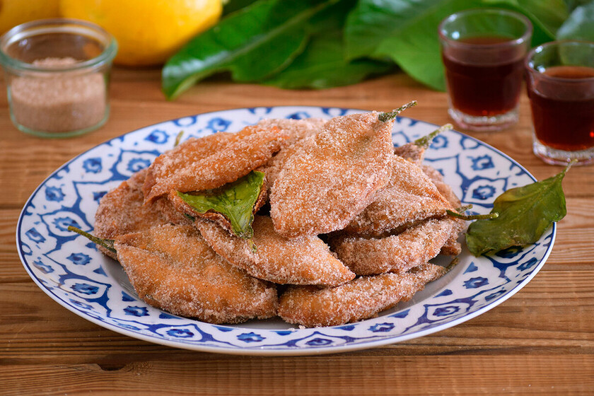
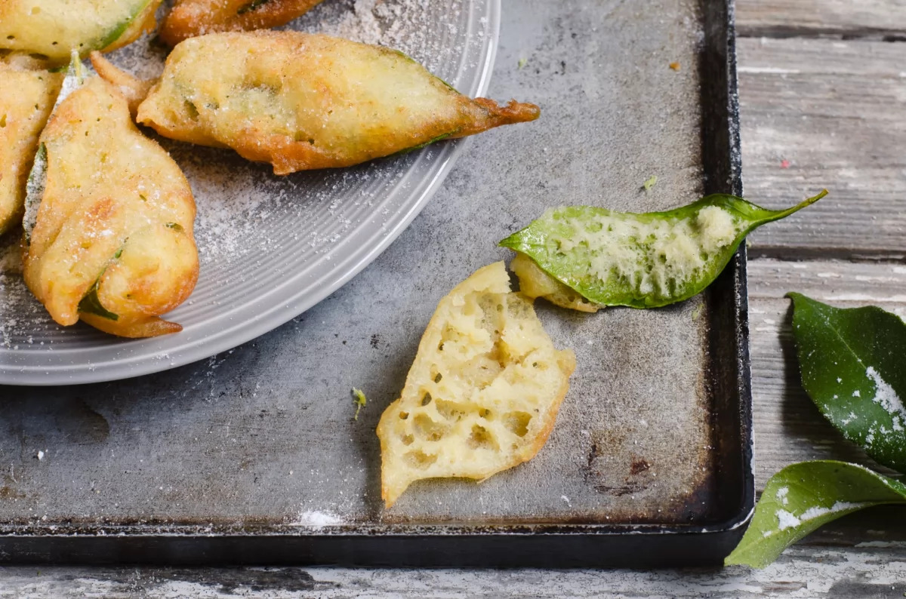

Gastronomía de la Región de Murcia
Paparajotes

Un dulce tradicional de Murcia
Los paparajotes son uno de los dulces más característicos de la gastronomía tradicional de la Región de Murcia. Están especialmente vinculados a las celebraciones y fiestas populares.
Se elaboran utilizando hojas de limonero recubiertas con una masa preparada a base de harina, huevo, leche y otros ingredientes.
Una vez preparados, los paparajotes se fríen y se suelen presentar espolvoreados con azúcar y canela. La hoja de limonero aporta su aroma característico, aunque no se debe comer.


Características
- Se elaboran utilizando hojas de limonero.
- La masa contiene harina y otros ingredientes.
- Se fríen antes de servir.
- Suelen acompañarse de azúcar y canela.
- La hoja de limonero no se debe comer.